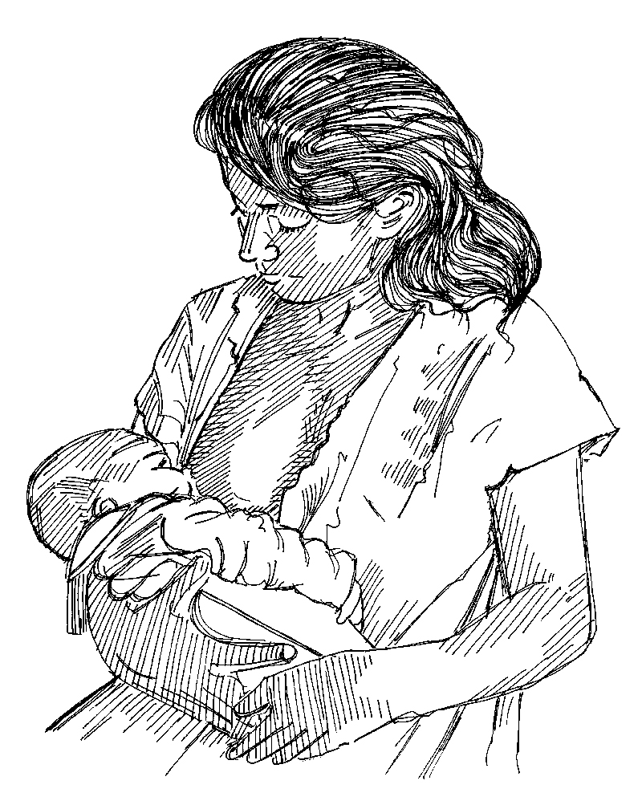

Resumen
- La lactancia materna puede salvar la vida de los bebés y niños pequeños en las epidemias de diarrea.
- Siempre es bueno continuar amamantando en epidemias porque la leche materna es un alimento limpio, nutritivo y barato para los bebés.
¿Por qué amamantar?
- La leche materna es el mejor alimento para los bebés en los primeros 6 meses de su vida.
- La leche materna inmediatamente después del nacimiento protege al bebé de las infecciones y no debe suspenderse.
- En las epidemias de diarrea, la lactancia materna exclusiva de bebés menores de 6 meses de edad puede salvar sus vidas de la diarrea mortal y del cólera.
Lo que necesita saber
- Averigüe cuales trabajadores de salud comunitaria y parteras tradicionales están promoviendo la lactancia materna y trabaje con ellos.
- Familiarícese con las creencias y prácticas culturales locales que obstaculizan la lactancia materna exclusiva.
- Conozca a todas las familias en su área que tienen bebés menores de 6 meses.
- La alimentación con biberón puede ser peligrosa si las botellas o el agua que se usa para preparar la leche en polvo no están muy limpias o si están contaminadas con gérmenes. Siempre aconseje a las madres a amamantar.
¿Qué hacer?
- Durante las actividades de movilización social, y las visitas domiciliarias, o al promover la salud, hágales saber a las madres que la lactancia materna exclusiva protege a sus bebés de las enfermedades diarreicas y puede prevenir la muerte.
- Hable con los líderes comunitarios y religiosos y con los padres sobre la importancia de la lactancia materna. Solicite su ayuda para persuadir a las madres a amamantar.
- Repita el mismo mensaje: la lactancia materna salva las vidas de los bebés en las epidemias de diarrea. Hable con las mujeres para averiguar qué apoyo necesitan y cuáles dificultades enfrentan para continuar amamantando. Trabaje con mujeres y trabajadores de salud para tratar de resolver sus problemas y preocupaciones.
- Después de que termine la epidemia, siga trabajando para fomentar la lactancia materna.

Amamantar exclusivamente desde el nacimiento hasta los 6 meses de edad. Después de esta edad, introduzca los alimentos apropiados mientras continúa amamantando.